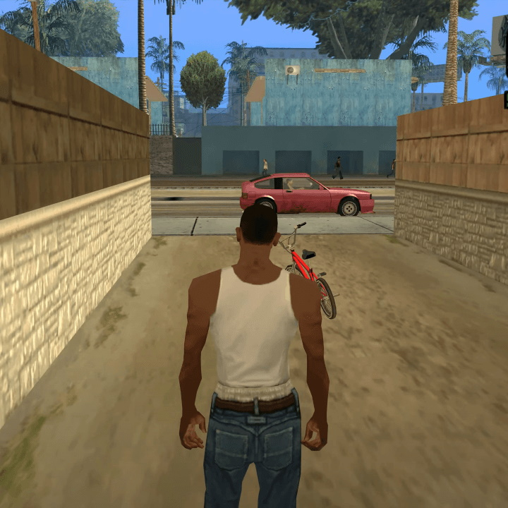

Story
In GTA: San Andreas
keert Carl "CJ" Johnson terug naar zijn thuisstad Los Santos na de moord op zijn moeder. Hij raakt opnieuw betrokken bij bendeoorlogen, verraad door oude vrienden en corruptie, terwijl hij vecht om zijn familie te herstellen en zijn stad te redden. Uiteindelijk neemt CJ wraak en herwint de controle over Los Santos.

CJ
keert terug naar Los Santos om zijn familie en de Grove Street Families te redden. Hij strijdt tegen rivaliserende bendes en corrupte agenten, reist door San Andreas en raakt verwikkeld in criminele activiteiten. Uiteindelijk neemt hij wraak op de verraders en herwint de controle over zijn stad.